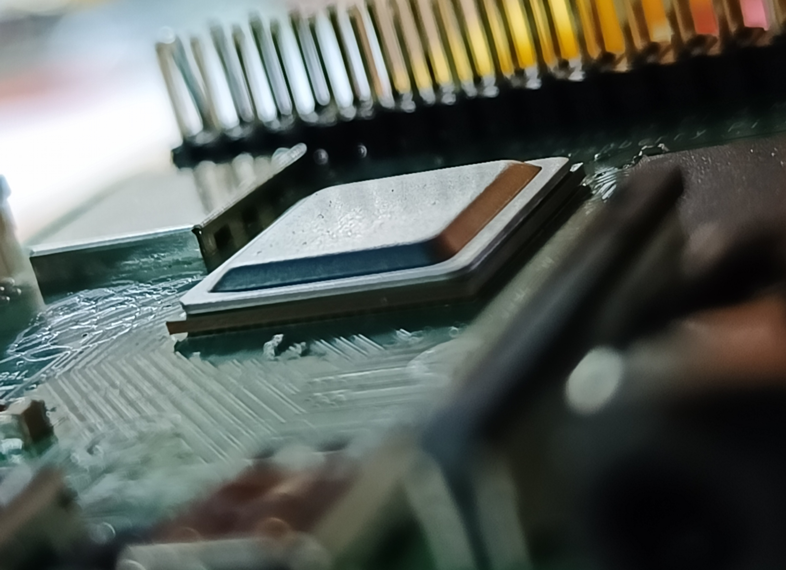
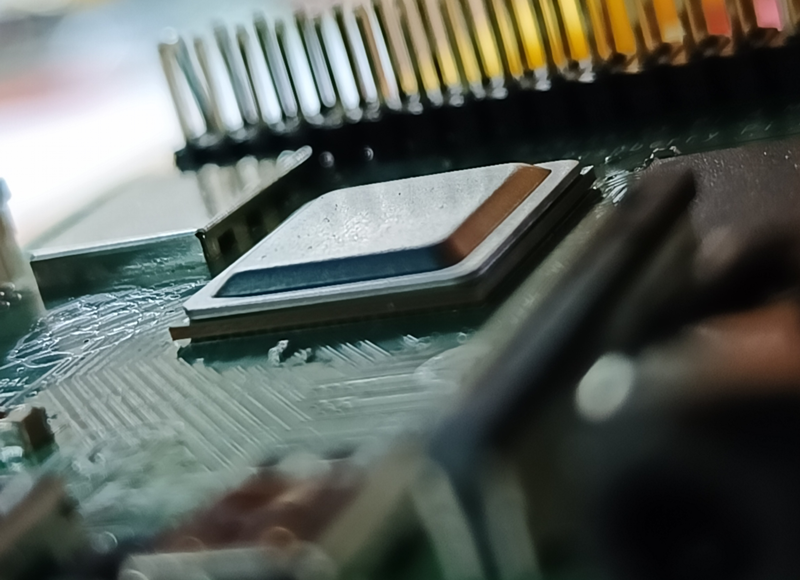

World Robot Olympiad 2024
รางวัลรองชนะเลิศอันดับ 2
แข่งขันในวันที่ 13-15 กันยายน พ.ศ. 2567 ณ เอ็มซีซี ฮอลล์ ชั้น 3 เดอะมอลล์โคราชโดยบริษัท Gammaco ร่วมกับหน่วยงานอื่น ๆ
เข้าร่วมการแข่งขัน World Robot Olympiad (WRO) 2024 ในรายการ Robomission รุ่น senior ลักษณะการแข่งขันเป็นการต่อหุ่นยนต์เพื่อทำตามเป้าหมายหรือภารกิจที่ถูกจัดไว้ ซึ่งมีการใช้ทักษะ ในหลาย ๆ ด้าน เช่น การเขียนโค้ด การต่อหุ่นยนต์โดยใช้ความรู้เรื่องอุปกรณ์ต่าง ๆ เป็นต้น
สิ่งที่ได้รับจากการแข่งขัน ได้รับสิทธิ์ในการแข่งขันรายการดังกล่าวต่อในระดับนานาชาติ ในวันที่ 28-30 พฤศจิกายน พ.ศ. 2567 ในการแข่งขันครั้งนี้ ตัวผมได้รับความรู้และแนวคิดเชิงกระบวนการใหม่ ๆ มากมาย ทั้งจากทีมตัวเองและทีมคู่แข่ง ซึ่งสามารถนำความรู้นี้ไปต่อยอดในอนาคตได้ ทั้งยังได้ฝึกการทำงานร่วมกันเป็นทีมกับเพื่อน ๆ อีกด้วยครับ


Pandas Project
Data analytics
28 สิงหาคม–22 กันยายน พ.ศ. 2566
โพรเจกต์ที่ผมทำ เป็นโพรเจกต์เกี่ยวกับฐานเงินเดือน และจำนวนประชากรที่ทำงานในสายอาชีพของ Data science ในต่างประเทศ ซึ่งได้ชุดข้อมูลมาจาก kaggle (สามารถตรวจสอบได้ใน Qr code)
สิ่งที่ผมได้ทำคือการจัดเรียงข้อมูลที่มาจากชุดข้อมูลนี้ และนำมาทำการแสดงผลในรูปแบบของกราฟต่าง ๆ ซึ่งต้องวิเคราะห์ว่าข้อมูลแบบไหนเหมาะกับกราฟประเภทอะไร เช่น ถ้าข้อมูลมีเยอะ ไม่ควรนำมาทำกราฟวงกลม ให้ลองหากราฟรูปแบบอื่น
สิ่งที่ได้รับจากโพรเจกต์ ผมได้เรียนรู้กระบวนการเกี่ยวกับการทำ Data analytics เบื้องต้น การใช้ library pandas ได้เสริมแนวคิดและกระบวนการการเขียนโค้ด ได้ฝึกการตรวจสอบข้อมูลที่ได้จากชุดข้อมูลว่าน่าเชื่อถือหรือไม่ และได้ฝึกวินัยในการทำโพรเจกต์ เพราะเป็นโปรเจกต์ที่มีความจำกัดเรื่องเวลา
ตรวจสอบเอกสารต่าง ๆได้ที่ Qr code นี้

Youth Innovation Project
Bronze medal (เหรียญทองแดง)
31 กรกฏาคม พ.ศ.2567


.png)
Thailand open ROS and smart robot competition 2024
30-31 มีนาคม พ.ศ.2567
 

ผมเข้าร่วมการแข่งขัน Thailand Open ROS and Smart Robot Competition 2024 จัดโดยสมาคมหุ่นยนต์ไทยร่วมกับ iMAKE Innovation และมหาวิทยาลัยต่าง ๆ การแข่งขันเป็นแบบเปิด โดยส่วนใหญ่ใช้อุปกรณ์ Raspberry Pi ผมลงแข่ง 2 รายการ คือ Junior Rescue และ Industrial Logistics League ซึ่งต้องใช้ความรู้เรื่อง ROS และทำงานผ่าน Linux หรือ Raspberry Pi การแข่งขันนี้ทำให้ผมได้ศึกษาและใช้งาน ROS เป็นครั้งแรก รวมถึงเข้าใจกระบวนการทำงานของ Linux และเห็นถึงการประยุกต์ใช้ในอุตสาหกรรม
Arduino Education Day Thailand 2023
2nd runner up รางวัลรองชนะเลิศอันดับ 2
23-25 พฤษจิกายน พ.ศ.2566


Leadership & Volunteer


โรงเรียนของผมเป็นโรงเรียนประจำ นักเรียนทุกคนตั้งแต่ ม.1 ถึง ม.6 จะมีสถานที่พักไม่เหมือนกัน โดยแบ่งออกเป็น 6 คณะ หัวหน้าคณะคือนักเรียนชั้น ม.6 ที่ได้รับเลือกให้ดูแลนักเรียนในคณะนั้น ๆ โดยทำหน้าที่จัดตารางเวลาและการดำเนินชีวิตของนักเรียนทั้งหมดในช่วงที่อยู่ในคณะ มีครูประจำคณะทำหน้าที่เป็นที่ปรึกษา แต่หากมีปัญหาเกิดขึ้น หัวหน้าคณะจะต้องร่วมมือกับครูประจำคณะในการแก้ปัญหา
การเป็นหัวหน้าคณะก็เหมือนกับการเป็นพี่ดูแลนักเรียนคนอื่น ๆ ให้ใช้ชีวิตตามหลักคุณธรรมและจริยธรรมของสังคม และต้องเป็นแบบอย่างที่ดีให้กับนักเรียนคนอื่น ๆ ด้วยเช่นกัน การเป็นหัวหน้าคณะเปรียบเสมือนการทำสภานักเรียนของโรงเรียนทั่วไป เพราะเมื่อมีกิจกรรมของโรงเรียน ผมในฐานะ หน.นร.จะต้องทำหน้าที่เป็นผู้ช่วยหรือการเป็น staff ในบางครั้งเช่นกัน
สิ่งที่ได้รับ ได้ทักษะการจัดการ การเป็นผู้นำ จากการดูแลนักเรียนคนอื่น ๆ คอยเป็นที่พึ่งพิงให้กับรุ่นน้อง ได้ฝึกจัดเวลาชีวิตตัวเอง ได้ความเป็นระเบียบวินัยแก่ตนเองมากขึ้น เพราะมีกิจวัตรประจำวันที่ต้องทำให้สำเร็จ รวมถึงงานที่ได้รับหมอบหมายมาในแต่ละครั้ง ทั้งต้องเตรียมตัวสอบเข้ามหาวิทยาลัย และอีกหนึ่งสิ่งที่ได้รับคือได้เป็นผู้ใหญ่มากขึ้นจากการทำกิจกรรมต่าง ๆ ของหัวหน้าคณะนักเรียน
ได้ทำกิจกรรมจิตอาสาเก็บขยะริมทะเล พร้อมทั้งอบรมเรื่องทัศนคติและการช่วยกันดูแลสิ่งแวดล้อม ณ โครงการพัฒนาป่าชุมชนบ้านอ่างเอ็ด และศูนย์การพัฒนาอ่าวคุ้งกระเบนตามพระราชดำริ จังหวัดจันทบุรี วันที่ 1-4 มีนาคม พ.ศ. 2567


ได้เป็นพี่ staff กำกับดูแลนักเรียนใหม่ที่พึ่งเข้าศึกษา ทำกิจกรรม และให้ความรู้ต่าง ๆ ทางวิทยาศาสตร์ เพื่อให้รุ่นน้องได้มีประสบการณ์ภายในรั้วโรงเรียนในวันที่ 22-23 ตุลาคม พ.ศ. 2566